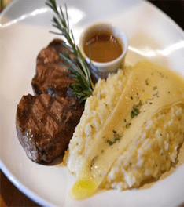
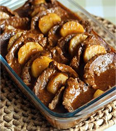
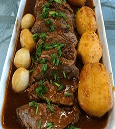
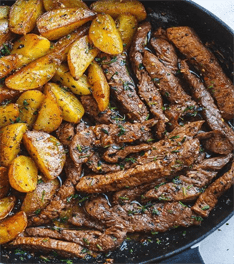
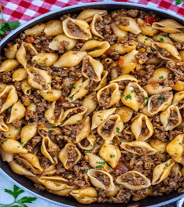
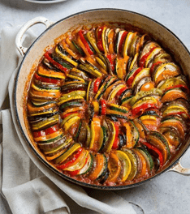

Salgados
Descubra aqui um pouco do nosso cardápio e variedades de salgados na nossa casa.
- Filé Mignon:
- Maninha é feito com lagarto e batata ao
molho
de cerveja:
- Bisteca no mel ao alho com vinho branco
seco:
- Bife no alho e batata na frigideira:
- Macarronada ao molho bolonhesa:
- Ratatullie de abobrinha e
berinjela: